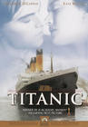

英文名： Titanic

中文名： 泰坦尼克号
别 名： 铁达尼号 | 泰坦尼克 | 铁达尼克号
导 演： ( 詹姆斯・卡梅隆/占士・金马伦 James Cameron )
主 演： (莱昂纳多・迪卡普里奥/李奥纳多狄卡皮欧 Leonardo DiC) (凯特・温斯莱特 Kate Winslet) (比利・赞恩 Billy Zane) (凯茜・贝茨 Kathy Bates) (弗朗西丝・费舍尔 Frances Fisher) (格洛莉娅・斯图亚特 Gloria Stuart)
【剧情简介】
为了寻找1912年在大西洋沉没的泰坦尼克号和船上的珍贵财宝----价值连城的“海洋之心”，寻宝探险家布洛克亲自下潜到3800米深的泰坦尼克号残骸，随后从沉船上发现并打捞起一个锈迹斑斑的保险柜，不料其中只有一幅保存完好的素描----一位佩戴着钻石项链的裸体年轻女子。这则电视新闻引起了一位百岁老妇人的注意,老人激动不已，随即乘直升飞机赶到布洛克的打捞船上。原来她名叫罗丝道森，正是画像上的女子。
看着画像，往事一幕幕重新浮现在老人的眼前：1912年4月10日，准备首航的泰坦尼克号停泊在港口，码头上人山人海，争相目睹人类有史以来最庞大、最豪华的轮船。罗丝，一位美丽漂亮而又不乏气质的贵族小姐与她的母亲及未婚夫----钢铁大王之子卡尔霍利一同登上了头等舱。与此同时，影片的另一位主人公----年轻的流浪画家杰克道森和他的朋友费比靠赌博幸运地赢到了三等舱的船票，高喊着“我们是世界上最幸运...”的他们在最后一刻登上了巨轮。泰坦尼克号启航了，早春的大西洋上风和日丽，碧波万里，杰克和他的伙伴站在船头眺望前方，高声欢呼，兴奋不已，仿佛此时世界已属于他们。
罗丝在上层社会的交际圈中生活，早已厌倦了贵族们的无聊谈话，感觉自己无异于笼中之鸟，她愁眉不展地来到甲板上眺望远方，排遣愁情。杰克一看到罗丝，就被她的气质所深深吸引。夜幕降临，又一场灯红酒绿之后，罗丝对未来和婚姻感到万分无奈；她冲向甲板，试图跳入大海结束一生。杰克及时发现并且在关键时刻以自己的真诚和独到的幽默说服了罗丝。尽管卡尔很不情愿，但为答谢杰克的救妻之恩，他只好邀请杰克到头等舱里进餐。卡尔本想借机寒碜杰克一番，没想到杰克在餐桌前的坦诚之言竟博得满堂喝彩。杰克和罗丝两人从此相识并开始了解对方，罗丝向杰克吐露心中郁闷： "我觉得这一生不外如此，就象已经活了一辈子似的。无数的宴会、舞会、游艇赛、马球赛，能接触到的都是思想狭隘、有口无心的人。我感觉就象站在悬崖边，没人拉我回来，没人关心，甚至无人理会。” 在杰克的开导和陪伴下，罗丝找回了失去已久的快乐，灿烂的笑容终于重新洋溢在她的脸庞。
罗丝的未婚夫卡尔发现了杰克和罗丝的来往之后，心中十分不快，他送给罗丝一条价值连城的钻石项链“海洋之心”，并对她表白了自己的心迹意图博得罗丝的欢心。然而在罗丝的眼里，卡尔只是一个十足的势利小人，她从心底里不愿嫁给他。可是在母亲与未婚夫的压力之下，罗丝不得不有意回避杰克的感情，可正因为这样罗丝才意识到自己已经深深的爱上了杰克。
从相知到相爱，虽然只是短短几天时间，罗丝和杰克已经无法分开。在卧室中，罗丝戴上了“海洋之心”，由杰克绘出了那张令她永生难忘的画像。罗丝决定无视家庭和礼数的压力在泰坦尼克号靠岸后与杰克一起生活，幸福似乎距离这对情侣仅咫尺之遥。
白星航运公司经理布鲁斯伊斯梅为了让泰坦尼克号创造横跨大西洋的最快纪录，不顾潜在的冰山威胁暗示船长史密斯提高船速。14日夜晚，海面出奇的平静，泰坦尼克号仍然全速行驶。了望台发现正前方的冰山后立刻通知了驾驶舱和大副，可是惯性极大的轮船已来不及躲避, 船身右侧被冰山割裂，五个舱室进水。号称永不沉没的泰坦尼克号将在两小时内沉没。而此时船上的救生艇只够一半乘客使用，船上陷入一片恐慌。
不料，这时杰克却被卡尔以偷窃钻石之名栽赃陷害，并被关在下层船舱。不明真相的罗丝随众人一起在甲板上等候救生艇，可她终究还是相信杰克是无辜的。罗丝不顾一切回到空无一人的船舱寻找杰克，并在紧要关头找来救生斧救出他。两人来到甲板，罗丝在杰克的劝说下上了救生艇。救生艇徐徐放下，罗丝神情恍惚，突然她放弃了也许是最后的逃生机会跳回泰坦尼克号，这对情侣紧紧地拥抱在一起。
“梦幻之船”泰坦尼克号开始缓缓下沉，一幕悲剧开始上演。漆黑的海洋和天空连成一片，无情的吞噬着绝望的乘客。杰克带着罗丝跑到船尾，爬上栏杆（也就是他们爱情开始的地方）坚持到最后，直到泰坦尼克号沉没。两人全力挣扎出巨大的漩涡之后，杰克将罗丝推上一块漂浮木板，自己却浸泡在冰冷的海水中。
几个小时之后，救援船返回救起了奄奄一息的罗丝，而此时早已冻僵的杰克却被冰海无情的吞没。罗丝信守对杰克许下的诺言，勇敢地活着。
镜头回到了老罗丝所在的船舱，听故事的布洛克等人都流下了眼泪，老罗丝感慨道：“现在你们知道有个叫杰克道森的人，他救了我，他让我明白生命的真正价值，可我连他的一张相片也没有，可他永远活在我的心里……”随后老罗丝一个人静静地来到船尾，将“海洋之心”抛入海中，以告杰克在天之灵……